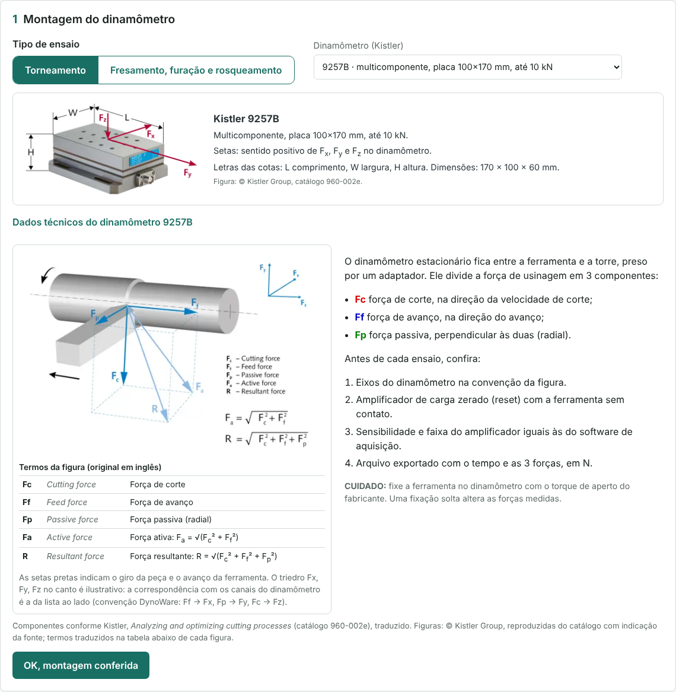
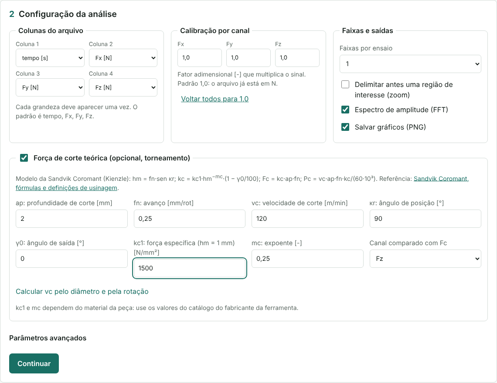
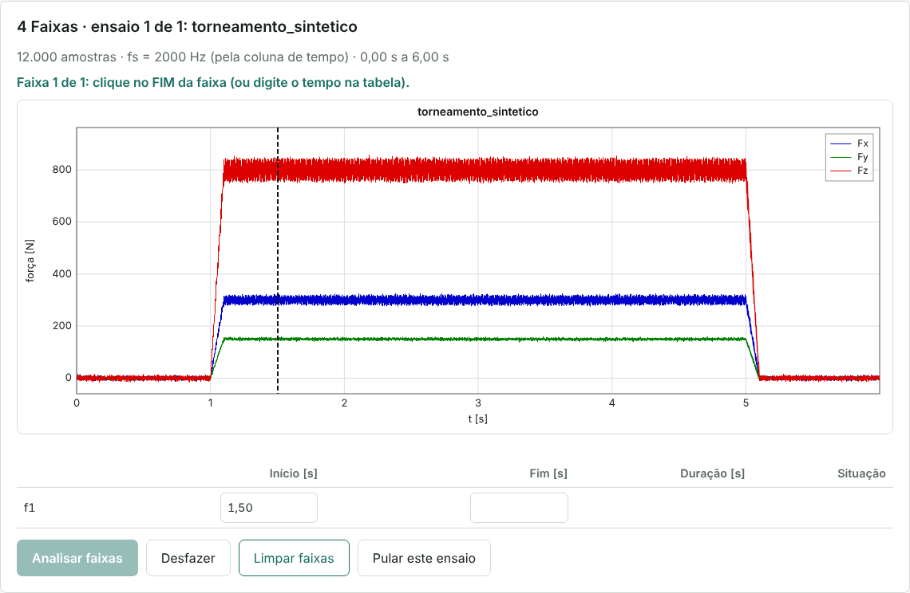
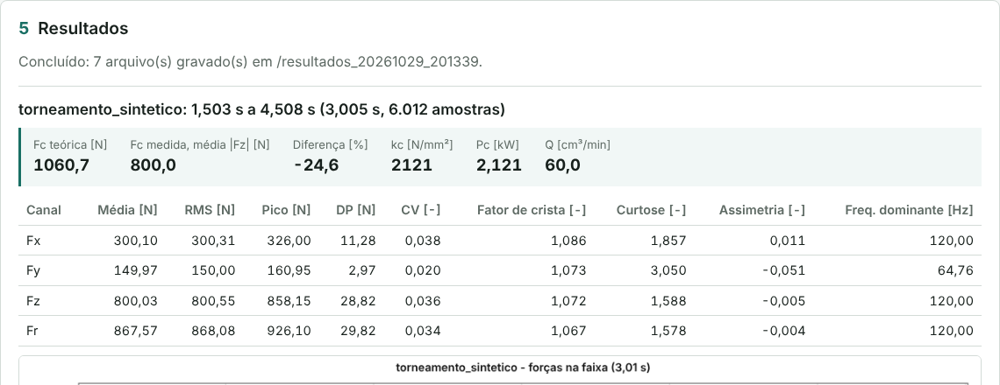

Manual técnico de uso: forças de usinagem
Módulo de forças de usinagem do LabForce NUPEF, versão web 2.0.0. Redação conforme a ASD-STE100, adaptada ao português.
1 Escopo e aplicação
Este manual dá as instruções de uso do módulo de forças de usinagem.
O módulo analisa as forças medidas com um dinamômetro de usinagem nas direções x, y e z. Os dados de entrada são arquivos de texto (.txt ou .csv) com 4 colunas: tempo e as 3 forças. O módulo aceita os arquivos exportados pelo DynoWare. O módulo funciona no navegador. Os arquivos não saem do computador.
O módulo faz estas tarefas:
- Lê o arquivo e ignora as linhas de texto (metadados e cabeçalho).
- Multiplica cada força pelo fator de calibração do canal.
- Calcula a taxa de amostragem pela coluna de tempo.
- Calcula, em cada faixa, a média, o RMS, o pico, o desvio padrão, o coeficiente de variação, o fator de crista, a curtose, a assimetria e a frequência dominante de Fx, Fy, Fz e da resultante Fr.
- Mostra o espectro de amplitude das forças (FFT).
- Calcula a força de corte teórica do torneamento e compara com a força medida (opcional).
- Grava os resultados em arquivos CSV, TXT e PNG numa pasta do computador.
O módulo não faz estas tarefas:
- Não corrige o deslocamento do zero (offset) nem a deriva do amplificador de carga.
- Não filtra o sinal. O sinal analisado é o sinal do arquivo multiplicado pelo fator de calibração.
- Não substitui a calibração do dinamômetro. O fator de calibração só corrige um ganho conhecido.
- Não garante a força teórica. A força teórica é uma estimativa com dados de catálogo.
2 Convenções de formatação
Este manual usa a mesma formatação em todas as seções.
| Elemento | Formatação | Exemplo |
|---|---|---|
| Arquivo, campo, mensagem | Fonte de código | forcas_resumo.csv, relatorio.txt |
| Botão ou opção da tela | Negrito | Continuar, Analisar faixas |
| Unidade de medida | Entre colchetes | Fz [N], fs [Hz] |
| Procedimento | Lista numerada, uma ação por passo | 1. Abra o módulo. |
| Figura | Imagem e legenda em itálico abaixo | Figura 1 — … |
| Instrução de segurança | Rótulo em negrito antes do texto | ADVERTÊNCIA:, CUIDADO:, NOTA: |
Os rótulos de segurança têm este significado:
- ADVERTÊNCIA: instrução que evita lesão ou morte.
- CUIDADO: instrução que evita dano ao equipamento ou perda de dados.
- NOTA: informação útil que não é uma instrução de segurança.
3 Termos e símbolos
Cada termo desta tabela tem um só significado neste manual.
| Termo | Significado |
|---|---|
| Ensaio | Um arquivo de forças de uma operação de usinagem (exemplo: E1.3.txt). |
| Faixa | Um intervalo de tempo do ensaio que o operador seleciona para a análise. |
| Região de interesse | O intervalo que os 2 primeiros limites delimitam no modo com zoom. |
| Rodada | Uma análise completa, do botão Iniciar análise até a mensagem Concluído. |
| Pasta de resultados | A pasta resultados_AAAAMMDD_hhmmss que o módulo cria em cada rodada. |
| Canal | Uma força do arquivo: Fx, Fy ou Fz [N]. |
| Fx, Fy, Fz | No torneamento, na convenção da figura 1: força de avanço (Ff), força passiva (Fp) e força de corte (Fc) [N]. |
| Fr | Força resultante em cada amostra: Fr = √(Fx² + Fy² + Fz²) [N]. |
| Fator de calibração | O número que multiplica o sinal de um canal [-]. Padrão 1,0. |
| Taxa de amostragem (fs) | A quantidade de amostras por segundo, calculada pela coluna de tempo [Hz]. |
| RMS | Valor eficaz: raiz da média dos quadrados [N]. |
| DP | Desvio padrão populacional [N]. |
| CV | Coeficiente de variação = DP/|média| [-]. |
| Fator de crista | Pico/RMS [-]. |
| Curtose | Quarto momento padronizado [-]. Distribuição normal = 3; senoide = 1,5. |
| Assimetria | Terceiro momento padronizado [-]. Distribuição simétrica = 0. |
| Frequência dominante | A frequência da maior raia do espectro do sinal sem a média [Hz]. |
| ap | Profundidade de corte [mm]. |
| fn | Avanço por rotação [mm/rot]. |
| vc | Velocidade de corte [m/min]. |
| κr | Ângulo de posição da aresta [°]. |
| γ0 | Ângulo de saída [°]. |
| hm | Espessura média do cavaco [mm]. |
| kc, kc1 | Força específica de corte; kc1 é o valor para hm = 1 mm [N/mm²]. |
| mc | Expoente de correção de kc pela espessura do cavaco [-]. |
| Fc, Pc, Q | Força de corte [N], potência líquida de corte [kW] e taxa de remoção de material [cm³/min]. |
4 Advertências e cuidados gerais
ADVERTÊNCIA: Pare a máquina e bloqueie o comando antes de montar ou ajustar o dinamômetro. Uma peça em rotação pode prender a mão ou a roupa.
ADVERTÊNCIA: Use óculos de proteção durante o ensaio e mantenha as proteções da máquina fechadas. O cavaco é cortante e quente.
CUIDADO: Não exceda a faixa de medição do dinamômetro. Uma sobrecarga pode danificar os sensores piezoelétricos.
CUIDADO: Não abra os arquivos CSV da pasta de resultados durante a rodada. O módulo grava os arquivos após cada faixa, e a gravação pode falhar.
CUIDADO: Use o fator de calibração 1,0 se o arquivo já estiver em N. Um fator errado dá forças erradas sem aviso.
CUIDADO: Sem gravação direta em pasta (seção 5), não feche a aba antes do download do .zip. Os resultados ficam só na memória do navegador.
NOTA: A força teórica é uma estimativa. Use a força medida como resultado do ensaio.
5 Acesso e arquivos
O módulo é uma página web. Não é necessário instalar programas. O endereço é https://resendepengmec-ai.github.io/labforce-nupef/forcas/.
| Navegador | Gravação dos resultados |
|---|---|
| Chrome ou Edge no computador | Direto na pasta que o operador escolhe. O navegador lembra a pasta. |
| Firefox, Safari ou celular | Num arquivo .zip que o navegador baixa no fim da rodada. |
O código do módulo fica no repositório labforce-nupef, nestes arquivos:
| Arquivo | Função |
|---|---|
forcas/index.html, js/app.js | Tela e fluxo da análise. |
js/nucleo.js | Leitura do arquivo, calibração, taxa de amostragem, estatística, frequência dominante e força teórica. |
js/analise.js, js/figuras.js | Fluxo de um ensaio, linhas dos CSV e gráficos. |
js/autoteste.js, testes/ | Teste de verificação (seção 6). |
samples/torneamento_sintetico.txt | Arquivo de exemplo no formato do DynoWare (sinal sintético). |
../comum/ | Partes comuns aos módulos: FFT, gráficos, seleção de faixas, gravação e estilos. |
5.1 Procedimento de acesso
- Abra o Chrome ou o Edge no computador do laboratório.
- Abra o endereço do módulo.
- Faça o teste de verificação (seção 6) no primeiro uso do computador.
NOTA: A página atualiza sozinha quando o repositório muda. Se a tela mostrar uma versão antiga, pressione Ctrl+F5. A versão aparece no rodapé da tela de análise.
6 Teste de verificação
Faça este teste no primeiro uso de um computador e após cada atualização do módulo. O teste usa sinais sintéticos com resultado conhecido: senoides, um arquivo no formato do DynoWare e um ensaio completo com Fz = 800 N.
6.1 Procedimento
- Clique em Executar a verificação.
- Aguarde o fim do teste. O tempo é menor que 5 s.
- Confirme que a mensagem mostra
Forças de usinagem: 35 verificações OK.
CUIDADO: Se a mensagem mostrar FALHA, não use o módulo. Pressione Ctrl+F5 e faça o teste outra vez. Se a falha continuar, informe o responsável pelo módulo.
NOTA: O responsável pelo módulo executa o mesmo teste no repositório com o comando npm test.
7 Montagem do dinamômetro
Na etapa 1, escolha o tipo de ensaio e o dinamômetro. O tipo de ensaio muda a figura, as componentes de força e a lista de conferência. O dinamômetro padrão é o Kistler 9257B.
As figuras da etapa 1 são as originais do catálogo Kistler, com os rótulos em inglês. A tabela abaixo de cada figura traduz os termos: cutting force = força de corte (Fc), feed force = força de avanço (Ff), passive force = força passiva (Fp), normal feed force = força normal de avanço (FfN), active force = força ativa (Fa), resultant force = força resultante (R), torque = momento.
| Tipo de ensaio | Montagem | Componentes medidas |
|---|---|---|
| Torneamento | Dinamômetro estacionário entre a ferramenta e a torre (no 9257B, com o porta-ferramenta Tipo 9403). | Fc: força de corte (Fz); Ff: força de avanço (Fx); Fp: força passiva (Fy). Cabeçalho do DynoWare: Time Ff (Fx) Fp (Fy) Fc (Fz). |
| Fresamento, furação e rosqueamento | Peça presa diretamente sobre o dinamômetro estacionário, na mesa da máquina. | Ff: força de avanço; FfN: força normal ao avanço, no plano de trabalho; Fp: força passiva (axial). Na furação, a força axial é a força de avanço; Fx e Fy são forças de deflexão. |

NOTA: Um dinamômetro estacionário de 3 componentes não mede o momento. Na furação, o momento Mc e a força de corte Fc = Mc / d (broca de 2 gumes, diâmetro d) exigem o 9272 (4 componentes) ou um dinamômetro rotativo. Este módulo lê o tempo e 3 forças.
Ao escolher o dinamômetro, a tela mostra a figura do modelo no catálogo Kistler, com o sentido positivo de Fx, Fy e Fz (e de Mz, no 9272) e as letras das cotas traduzidas. Compare essas setas com a montagem real antes do ensaio.
NOTA: Dados técnicos do dinamômetro mostra a faixa de medição, a sensibilidade, a frequência natural, as dimensões e a massa do modelo escolhido (catálogo Kistler 960-002e, traduzido).
7.1 Procedimento de montagem
ADVERTÊNCIA: Pare a máquina e bloqueie o comando antes de montar o dinamômetro.
- Fixe o dinamômetro na máquina conforme o manual do fabricante.
- Fixe a ferramenta no dinamômetro com o torque de aperto do fabricante.
- Confirme que o eixo z do dinamômetro está na direção da velocidade de corte.
- Confirme que o eixo x está na direção do avanço.
- Conecte os cabos do dinamômetro ao amplificador de carga.
- Ajuste no amplificador a sensibilidade e a faixa de medição de cada canal.
- Use no software de aquisição a mesma sensibilidade e a mesma faixa.
- Zere o amplificador (reset) com a ferramenta sem contato com a peça.
- Exporte o ensaio com o tempo e as 3 forças, em N.
NOTA: No fresamento, na furação e no rosqueamento, faça os passos 1, 5 a 9 e: fixe a peça diretamente sobre o dinamômetro, sem morsa pesada; alinhe o eixo x com o avanço; confirme que o eixo z é o eixo da ferramenta.
CUIDADO: Uma fixação solta altera as forças medidas e pode criar vibração.
NOTA: Com outra montagem, as direções podem mudar. Use o mapeamento das colunas (seção 8) para associar cada coluna do arquivo a Fx, Fy e Fz. Um fator de calibração negativo inverte o sentido de um canal.
NOTA: Os amplificadores de carga têm deriva. Grave o ensaio logo após o reset e faça ensaios curtos.
8 Parâmetros
Os parâmetros ficam na etapa 2 da tela (figura 3). O navegador lembra os valores. Altere um parâmetro somente na condição da coluna “Quando alterar”.
| Campo | Valor padrão | Unidade | Quando alterar |
|---|---|---|---|
| Tipo de ensaio | Torneamento | - | Para fresamento, furação ou rosqueamento. A força de corte teórica fica desabilitada nesses processos. |
| Dinamômetro | Kistler 9257B | - | Quando outro modelo estiver montado. O modelo define a faixa usada no aviso de sobrecarga. |
| Colunas 1 a 4 | tempo, Fx, Fy, Fz | - | Quando o arquivo tiver outra ordem de colunas. Cada grandeza deve aparecer uma vez. Use ignorar para uma coluna sem uso. |
| Fatores Fx, Fy, Fz | 1,0 | - | Quando o arquivo não estiver em N ou quando houver um ganho conhecido a corrigir. Um fator negativo inverte o sentido do canal. O fator não pode ser 0. |
| Faixas por ensaio | 1 | - | Para analisar mais trechos do mesmo ensaio (1 a 8). |
| Zoom | desmarcado | - | Para delimitar antes uma região de interesse em ensaios longos. |
| Espectro (FFT) | marcado | - | Desmarque para não gerar o gráfico do espectro. |
| Salvar gráficos (PNG) | marcado | - | Desmarque para gravar só os arquivos de texto. |
| Faixa mínima | 0,5 | s | Para aceitar faixas mais curtas ou exigir faixas mais longas. |
Os campos da força teórica só aparecem com a opção Força de corte teórica marcada.
| Campo | Valor padrão | Unidade | Quando alterar |
|---|---|---|---|
| ap | 2 | mm | Em cada ensaio: use a profundidade de corte real. |
| fn | 0,25 | mm/rot | Em cada ensaio: use o avanço real. |
| vc | 120 | m/min | Em cada ensaio. Para calcular vc pelo diâmetro D [mm] e pela rotação n [rpm], use Calcular vc pelo diâmetro e pela rotação. |
| κr | 90 | ° | Quando o ângulo de posição da ferramenta for outro. |
| γ0 | 0 | ° | Quando o ângulo de saída da ferramenta for outro. |
| kc1 | vazio | N/mm² | Sempre: digite o valor do catálogo para o material da peça. |
| mc | 0,25 | - | Quando o catálogo der outro valor para o material da peça. |
| Canal comparado com Fc | Fz | - | Quando a força de corte estiver em outro canal. |
NOTA: A taxa de amostragem não é um parâmetro. O módulo calcula a taxa pela coluna de tempo (seção 9).
9 Taxa de amostragem
O módulo calcula a taxa de amostragem de cada ensaio pela coluna de tempo:
fs = (N − 1) / (t_N − t_1) [Hz]
N é a quantidade de amostras, t_1 é o primeiro tempo e t_N é o último tempo. Ensaios com taxas diferentes podem estar na mesma rodada.
O módulo também verifica o passo de tempo entre as amostras:
- Se o tempo não for crescente, o módulo ignora o ensaio e mostra
a coluna de tempo não é crescente. - Se o passo variar mais de 1 % do passo médio, o módulo mostra
AVISO ... o passo de tempo variou.
CUIDADO: Com o aviso de passo de tempo, use as estatísticas da faixa. Não use a frequência dominante nem o espectro.
NOTA: A resolução do espectro é fs/N da faixa. Uma faixa de 2 s tem resolução de 0,5 Hz. A maior frequência do espectro é fs/2.
NOTA: Ajuste a taxa de amostragem da aquisição para mais de 2 vezes a maior frequência de interesse. O filtro passa-baixa do amplificador deve estar abaixo de fs/2.
10 Procedimento de uso
Uma rodada tem 5 etapas: montagem, configuração, arquivos, faixas e resultados. A barra de etapas mostra a etapa atual (figura 2). Uma etapa concluída fica recolhida, com um resumo. Antes de iniciar a análise, Alterar reabre a etapa.
10.1 Confirmar a montagem
- Abra o módulo (seção 5.1).
- Em Tipo de ensaio, clique em Torneamento ou em Fresamento, furação e rosqueamento.
- Em Dinamômetro, escolha o modelo em uso (padrão: 9257B).
- Compare a montagem real com a figura da etapa 1.
- Faça a conferência da lista da etapa 1.
- Clique em OK, montagem conferida.
10.2 Configurar a análise

- Em Colunas do arquivo, escolha a grandeza de cada coluna.
- Em Calibração por canal, confirme os fatores. Para voltar ao padrão, clique em Voltar todos para 1,0.
- Em Faixas por ensaio, escolha quantas faixas vai avaliar em cada ensaio.
- Para delimitar antes uma região de interesse, marque Delimitar antes uma região de interesse (zoom).
- Marque ou desmarque Espectro de amplitude (FFT) e Salvar gráficos (PNG).
- Para comparar com a força teórica, marque Força de corte teórica e preencha os campos (seção 8).
- Clique em Continuar.
NOTA: Um valor inválido fica com a borda vermelha e uma mensagem abaixo do campo. A etapa só continua com todos os campos válidos.
10.3 Escolher os arquivos e a pasta
- Arraste os arquivos para a área tracejada, ou clique na área e escolha os arquivos.
- Confira a lista dos arquivos.
- Clique em Escolher pasta… e escolha a pasta de resultados. Nos próximos usos, clique em Usar a pasta “…”.
- Se o navegador pedir permissão de escrita, clique em Permitir.
- Clique em Iniciar análise.
NOTA: O módulo analisa os arquivos em ordem de nome.
10.4 Selecionar as faixas

O gráfico mostra Fx (azul), Fy (verde) e Fz (vermelho) no tempo. A linha acima do gráfico mostra a próxima ação. Cada limite pode ser marcado de duas formas: com um clique no gráfico ou com o tempo digitado na tabela.
- Com zoom, clique no início e no fim da região de interesse.
- Clique no início da faixa 1. Escolha um trecho de corte estável, sem a entrada e a saída da ferramenta.
- Clique no fim da faixa 1. O módulo marca a faixa com a cor e o rótulo f1.
- Faça os passos 2 e 3 para cada faixa seguinte.
- Confira os tempos e a situação de cada faixa na tabela.
- Clique em Analisar faixas.
Para usar o teclado, digite o tempo [s] no campo Início ou Fim da tabela e pressione Tab.
NOTA: Desfazer (ou Ctrl+Z) remove o último limite marcado. Limpar faixas remove todos os limites do ensaio. Pular este ensaio passa ao próximo ensaio sem análise.
NOTA: Uma faixa menor que a faixa mínima fica marcada em cinza com o texto “(curta)”. O módulo não analisa esta faixa.
10.5 Concluir a rodada
- Aguarde a análise de cada ensaio. A linha de progresso mostra a faixa em análise.
- Aguarde a mensagem
Concluído: … arquivo(s) gravado(s) em …. - Abra a pasta de resultados no computador, ou abra o
.zipbaixado.
NOTA: Nova análise volta à etapa 3 com a mesma configuração.
11 Resultados
Cada rodada cria uma pasta de resultados nova. O módulo não substitui os resultados de rodadas anteriores.
Com 1 faixa por ensaio, o rótulo é o nome do ensaio (exemplo: E1.3). Com 2 ou mais faixas, o rótulo tem o número da faixa (exemplo: E1.3_f2).

| Arquivo | Quando o módulo grava | Conteúdo |
|---|---|---|
relatorio.txt | Sempre | Colunas, calibração, opções, taxa de amostragem, avisos e estatística de cada faixa. |
forcas_resumo.csv | Sempre | Uma linha por faixa e canal (Fx, Fy, Fz, Fr): tempos, n, fs, média, RMS, pico, DP, CV, fator de crista, curtose, assimetria, frequência dominante. Separador: ponto e vírgula. Decimal: vírgula. |
<rótulo>_faixa.csv | Sempre | As amostras da faixa: tempo [s], Fx, Fy, Fz e Fr [N], já com os fatores de calibração. |
corte_teorico.csv | Força teórica marcada | Uma linha por faixa: parâmetros de corte, hm, kc, Fc teórica, Pc, Q, Fc medida e diferença [%]. |
<ensaio>_faixas.png | Gráficos marcados | Forças do ensaio com as faixas marcadas (registro da seleção). |
<rótulo>_sinal.png | Gráficos marcados | Fx, Fy e Fz na faixa, com a média de cada canal tracejada. |
<rótulo>_espectro.png | FFT e gráficos marcados | Espectro de amplitude de Fx, Fy e Fz na faixa, sem a média. |
NOTA: Os gráficos usam a mesma cor para cada canal: Fx azul, Fy verde e Fz vermelho. As legendas mostram a unidade entre colchetes.
12 Interpretação e limites de medição
12.1 Estatística por canal
O módulo calcula a estatística com as N amostras xi da faixa:
média = Σxᵢ / N RMS = √(Σxᵢ² / N) pico = máx |xᵢ| DP = √(Σ(xᵢ − média)² / N) CV = DP / |média| fator de crista = pico / RMS assimetria = Σ(xᵢ − média)³ / (N·DP³) curtose = Σ(xᵢ − média)⁴ / (N·DP⁴)
A frequência dominante é a maior raia do espectro do sinal sem a média, com janela de Hann e interpolação entre raias.
| Grandeza | Interpretação |
|---|---|
| Média de Fz | Força de corte média da faixa. É o valor que se compara com a força teórica. |
| DP e CV | Dispersão da força em torno da média. CV alto indica corte instável, vibração ou cavaco segmentado. |
| Fator de crista | Picos em relação ao RMS. Valores altos indicam impactos (corte interrompido, quebra de cavaco). |
| Curtose | Próxima de 3: variação aleatória. Muito maior que 3: picos isolados. Próxima de 1,5: oscilação periódica. |
| Assimetria | Diferente de 0: a força passa mais tempo de um lado da média (exemplo: picos só para cima). |
| Frequência dominante | Compare com a rotação (n/60 [Hz]), com a frequência de passagem dos dentes e com a frequência natural do conjunto. |
12.2 Força de corte teórica
O módulo usa as fórmulas de torneamento da Sandvik Coromant, com o modelo de Kienzle para a força específica de corte:
hm = fn · sen κr [mm] kc = kc1 · hm^(−mc) · (1 − γ0/100) [N/mm²] Fc = kc · ap · fn [N] Pc = vc · ap · fn · kc / (60 · 10³) [kW] Q = vc · ap · fn [cm³/min] vc = π · D · n / 1000 [m/min]
O módulo compara Fc teórica com o valor absoluto da média do canal escolhido:
diferença = 100 · (|Fc medida| − Fc teórica) / Fc teórica [%]
NOTA: kc1 e mc dependem do material, do tratamento térmico e da dureza. Use os dados do fabricante da ferramenta para o material real. O desgaste da ferramenta, a geometria real da aresta e o raio de ponta alteram a força. Uma diferença grande não indica, sozinha, erro de medição.
CUIDADO: As fórmulas são de torneamento. Não use a força teórica em fresamento ou furação.
12.3 Limites de medição
- Zero e deriva. O módulo não remove o offset. Um reset fora de hora ou a deriva do amplificador somam um erro constante à média. Confira se a força é próxima de zero antes da entrada da ferramenta.
- Frequência natural. O conjunto dinamômetro e ferramenta tem uma frequência natural (9257B: fn(x), fn(y) ≈ 2,3 kHz; fn(z) ≈ 3,5 kHz, sem massa adicional). Componentes do sinal perto dela ficam amplificadas. A massa da peça ou do porta-ferramenta reduz a frequência natural. O relatório mostra um aviso quando a frequência dominante passa da metade da menor frequência natural do modelo.
- Faixa de medição. O relatório mostra um aviso quando uma força passa de 90 % da faixa de medição do modelo (9257B: Fx, Fy −5 … 5 kN; Fz −5 … 10 kN).
- Filtro e taxa. Componentes acima de fs/2 aparecem rebatidas no espectro se o filtro do amplificador não as remover.
- Escolha da faixa. A entrada e a saída da ferramenta alteram a média e o DP. Use só o trecho de corte estável.
- Resultante. Fr é calculada em cada amostra. A média de Fr não é igual à resultante das médias.
13 Falhas e soluções
| Sintoma | Causa provável | Ação |
|---|---|---|
Tela de uma versão antiga ou verificação com FALHA | O navegador usa arquivos antigos da memória. | Pressione Ctrl+F5. Faça a verificação (seção 6) outra vez. |
| “Escolha tempo, Fx, Fy e Fz uma vez cada” | Uma grandeza está em 2 colunas ou falta uma grandeza. | Corrija o mapeamento das colunas. |
arquivo sem 4 colunas numéricas válidas | O arquivo tem menos de 4 colunas, ou o mapeamento está errado. | Abra o arquivo num editor de texto e confira as colunas. |
a coluna de tempo não é crescente | A coluna de tempo está em outra posição. | Corrija o mapeamento das colunas. |
AVISO ... o passo de tempo variou | A aquisição perdeu amostras, ou o tempo tem poucas casas decimais. | Use as estatísticas. Não use a frequência dominante. Exporte o tempo com mais casas decimais. |
| Aviso: “Este navegador não grava direto em pasta” | O navegador não tem gravação em pasta (Firefox, Safari, celular). | Use o .zip, ou use Chrome ou Edge no computador. |
| “Permissão de escrita negada” ou “Não foi possível acessar a pasta lembrada” | O navegador não deu permissão, ou a pasta mudou de lugar. | Clique em Escolher pasta… e escolha a pasta outra vez. |
| Analisar faixas desabilitado | Falta um limite, ou todas as faixas são curtas. | Siga a linha de instrução acima do gráfico. |
AVISO ... acima de 90 % da faixa | Força perto do limite do dinamômetro, modelo errado na etapa 1 ou fator de calibração errado. | Confira o modelo e o fator. Reduza ap ou fn, ou use um dinamômetro de faixa maior. |
AVISO ... metade da frequencia natural | Vibração ou componente do processo perto da ressonância do conjunto. | Não use a amplitude do espectro nessa frequência. Reduza a massa sobre o dinamômetro. |
| Força antes do corte diferente de zero | O amplificador não foi zerado, ou houve deriva. | Faça o reset antes de cada ensaio (seção 7.1). |
| Força com sinal invertido | Eixo do dinamômetro em sentido oposto à convenção. | Use o fator de calibração −1,0 no canal. |
| Diferença com a força teórica maior que 30 % | kc1 ou mc de outro material, parâmetros de corte errados ou ferramenta desgastada. | Confira ap, fn, vc e os dados do catálogo. Inspecione a aresta da ferramenta. |
| Aviso “erro na análise” num ensaio | Erro durante a análise do ensaio. | Os resultados das faixas anteriores ficam gravados. Veja a mensagem no relatorio.txt. |
14 Referências
- AEROSPACE, SECURITY AND DEFENCE INDUSTRIES ASSOCIATION OF EUROPE (ASD). ASD-STE100: Simplified Technical English. Issue 9. Bruxelas: ASD, 2025. Disponível em: https://www.asd-ste100.org. Acesso em: 29 out. 2026.
- KISTLER GROUP. Analyzing and optimizing cutting processes: sensors and solutions for cutting force measurements. Catálogo 960-002e-02.26. Winterthur: Kistler, 2026.
- KIENZLE, O. Die Bestimmung von Kräften und Leistungen an spanenden Werkzeugen und Werkzeugmaschinen. VDI-Zeitschrift, Düsseldorf, v. 94, n. 11/12, p. 299-305, 1952.
- SANDVIK COROMANT. Fórmulas e definições de usinagem. Sandviken: Sandvik Coromant, [2026]. Disponível em: https://www.sandvik.coromant.com/pt-pt/knowledge/machining-formulas-definitions. Acesso em: 29 out. 2026.
- SANDVIK COROMANT. Specific cutting force. Sandviken: Sandvik Coromant, [2026]. Disponível em: https://www.sandvik.coromant.com/pt-pt/knowledge/materials/specific-cutting-force. Acesso em: 29 out. 2026.